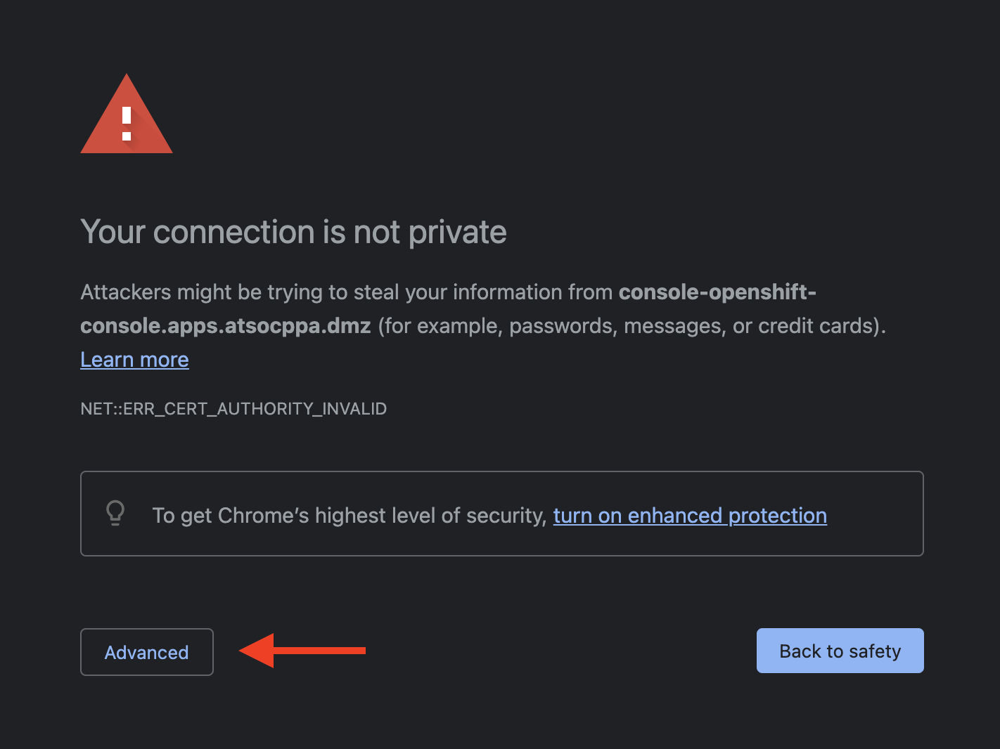

Connect to OCP and Authenticate¶
-
In your virtual machine desktop, open a Firefox web browser.
-
In the browser, navigate to the OpenShift on IBM Z console at the following address: https://console-openshift-console.apps.atsocppa.dmz/.
Note
You will receive a security challenge if the cluster has not yet been accessed from your browser. This is due to the default SSL certificate being “self-signed” and not yet recognized.
Accept the challenge to continue by clicking Advanced and then clicking Proceed to console-openshift-console.apps.atsocppa.dmz (unsafe).
You will likely need to do this twice due to how OpenShift reroutes Oauth requests.
Expand for screenshot


You will now see the OpenShift console login page.

-
Log in with the OpenShift credentials provided to you on the Lab Assignments page.
Hint
Your OpenShift credentials will be something like the following:
-
Username: userNN (where NN is your user number)
-
Password: p@ssw0rd
-